The Xbox 360 marketplace shut down in 2024 and took a huge chunk of the console's digital library with it. For a console that defined an era of gaming, that felt wrong. I'd been sitting on a Corona V3 unit for about a year, too intimidated by the RGH3 process to attempt it. After looking at the cost of sending it to Queensland for a professional mod, I decided to put that money into a proper soldering station and do it myself.
That decision kicked off what I'd now call the real beginning of my hardware modding journey.
The Console
I specifically wanted an Xbox 360 S (the slim model) with a Corona motherboard. These have a single main SoC instead of separate CPU and GPU packages meaning less heat, less power draw, and no RROD risk from GPU solder joint failures. The 16MB NAND model was also a deliberate choice, the 4GB variant uses the NAND as user storage, which is a known failure point.
This one came from Facebook Marketplace in surprisingly clean condition. Almost no dust inside, minimal thumb stick wear on the controller. Just needed a wipe-down and fresh thermal paste.
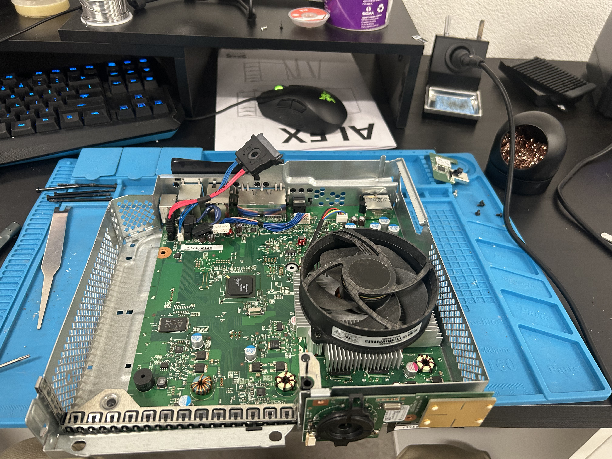
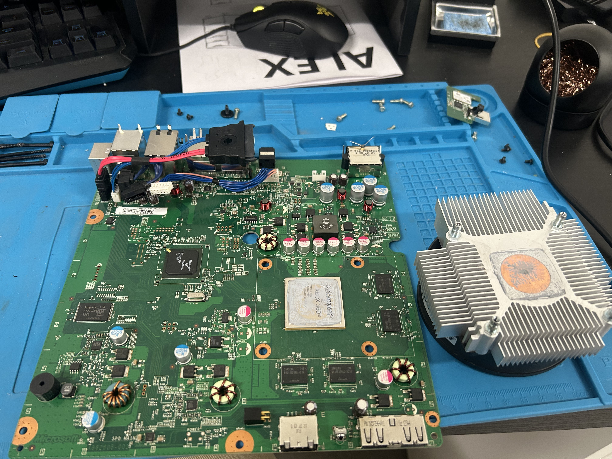
Tools and Prep
- Programmer: Raspberry Pi Pico running Picoflasher, used with J-Runner on PC
- Wire: 30 AWG solid core for the PLL point, 28 AWG for everything else
- POST fix adapter: Required for Corona V3/V4 boards, these are missing the POST pad that exists on V1/V2
- Iron: Horusdy 2-in-1 station, T18-B tip at 350°C with leaded solder
- Flux: Essmentuin, essential for the tiny SMD points
- Microscope: Budget Amazon USB digital microscope feeding into a monitor
- Insulation: Kapton tape throughout for routing and strain relief
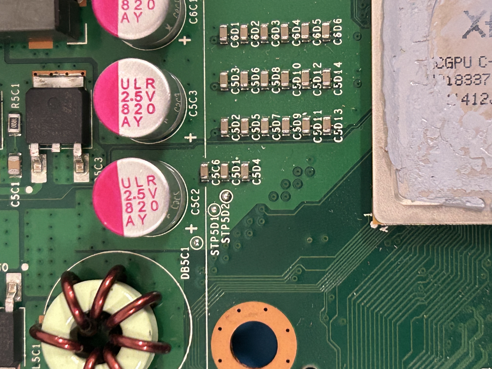
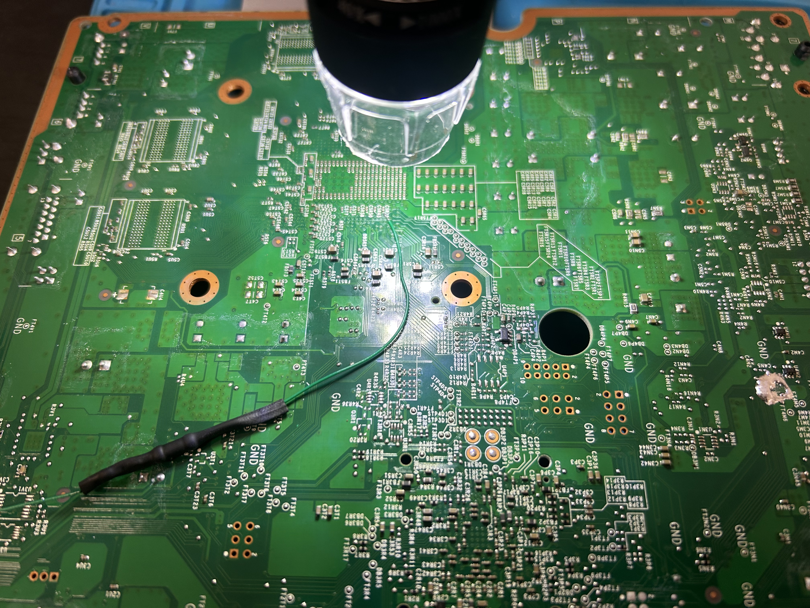
The Install
The Corona V3 is considered one of the trickier RGH3 targets. The board is smaller, the pads are smaller, and the PLL point requires scraping the solder mask with a fine flathead. One wrong move and you're doing a trace repair instead. I followed MrMario2011's guide closely and took my time.
- PLL solder mask scraped carefully with a fine flathead screwdriver at low pressure
- 1kΩ resistor added inline on the PLL wire per RGH3 instructions
- CPU_RST and PLL wiring routed and secured with Kapton tape to the underside of the board
- All points verified under the microscope and checked for continuity with a multimeter
- NAND dumped successfully with Picoflasher. Two clean matching dumps confirmed in J-Runner

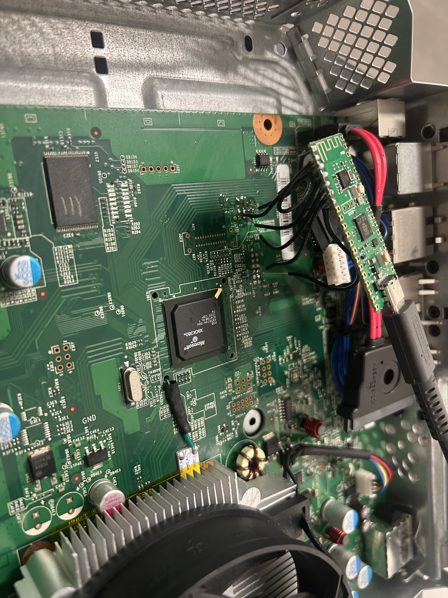
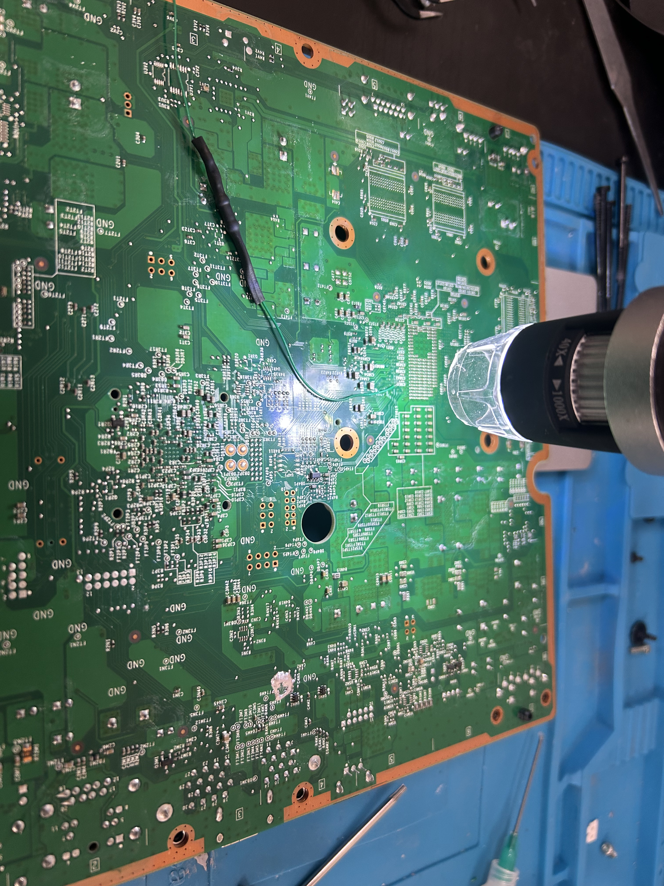
One quirk with J-Runner: it only detected my Pico when it was connected to both the Xbox and the PC simultaneously, with J-Runner already open. Once I figured that out, all NAND dumps were clean and matched 100%.
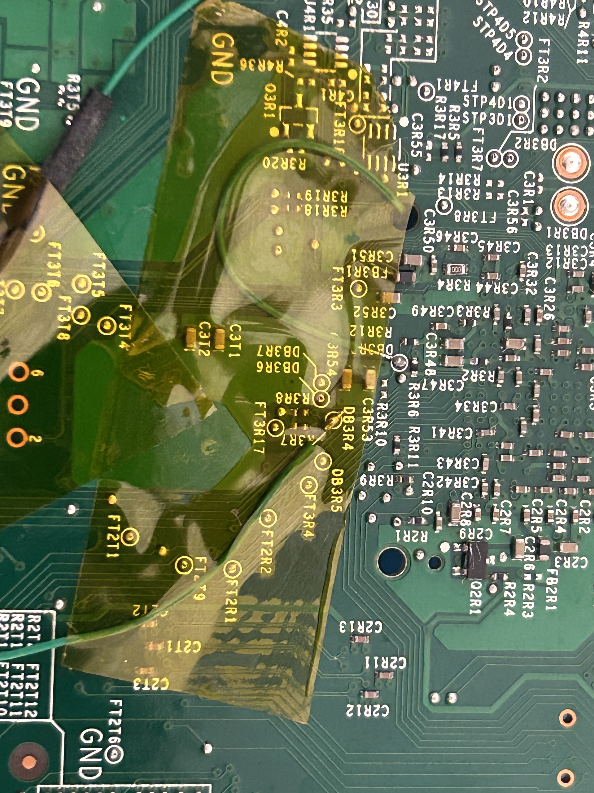
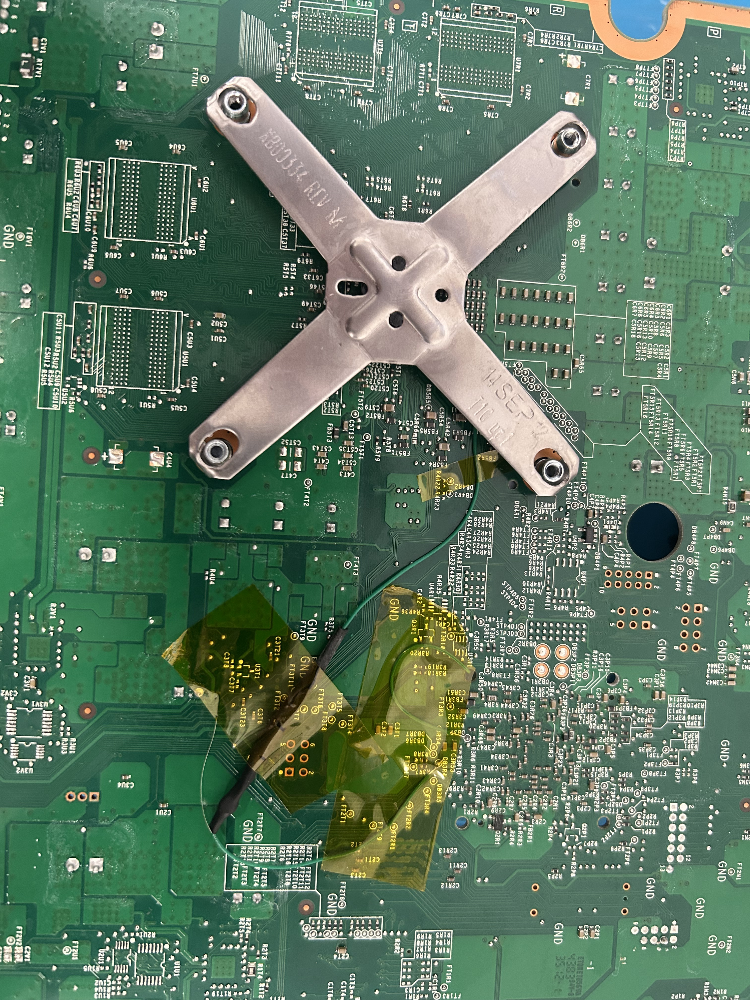
First Boot
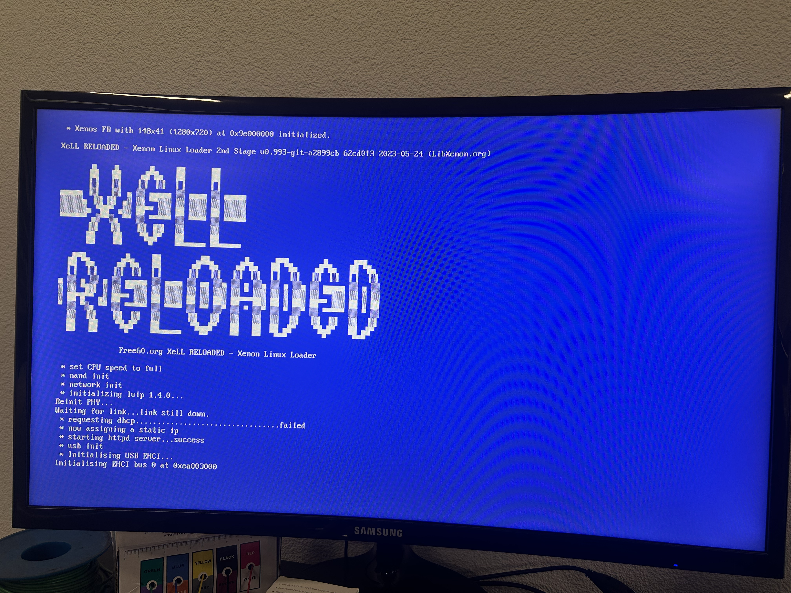
Booted straight into XeLL Reloaded on the first attempt. That blue screen is one of the most satisfying things you'll see after a build like this.
Testing and Results
- Warm boots: consistently around 4 seconds : nearly identical to stock
- Cold boots (after extended downtime): 30–40 seconds, but rare in practice
- Noise: already very quiet, new MX4 paste improved heat transfer noticeably
- Thermals: exhaust air runs hotter than before, meaning the SoC is coupling to the heatsink much better
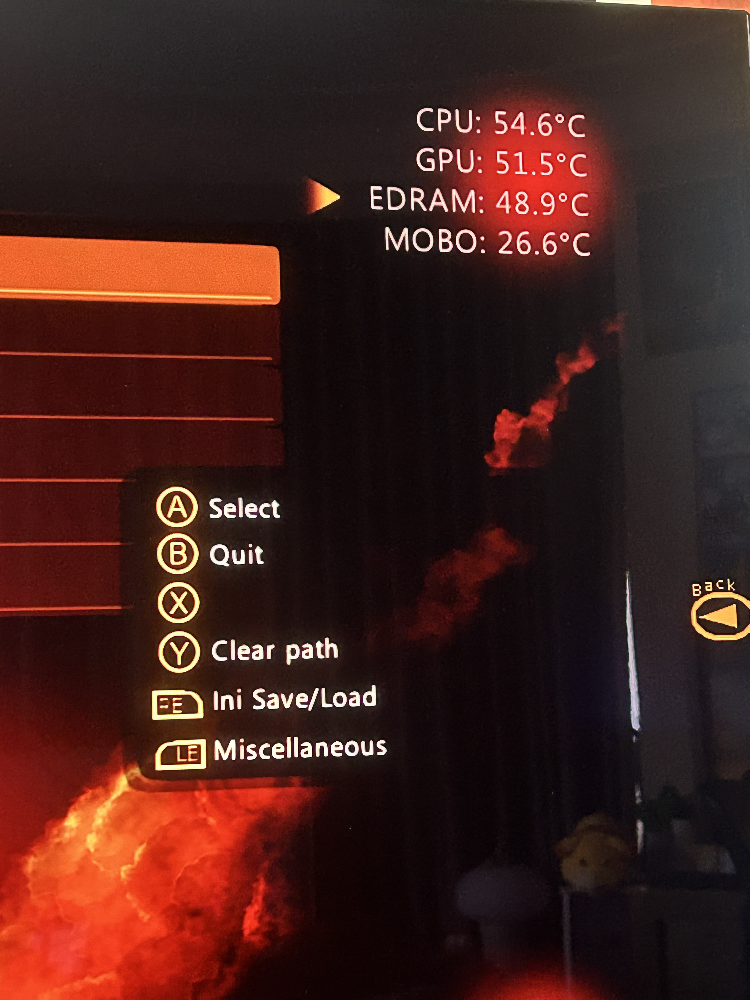
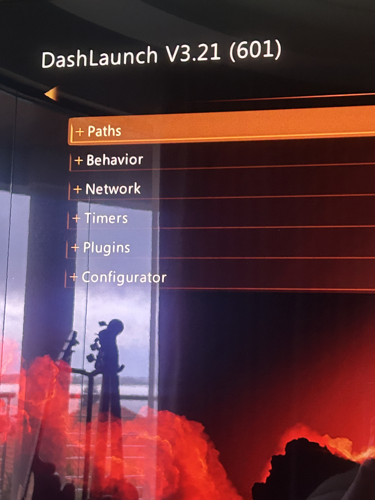
Living With the Build
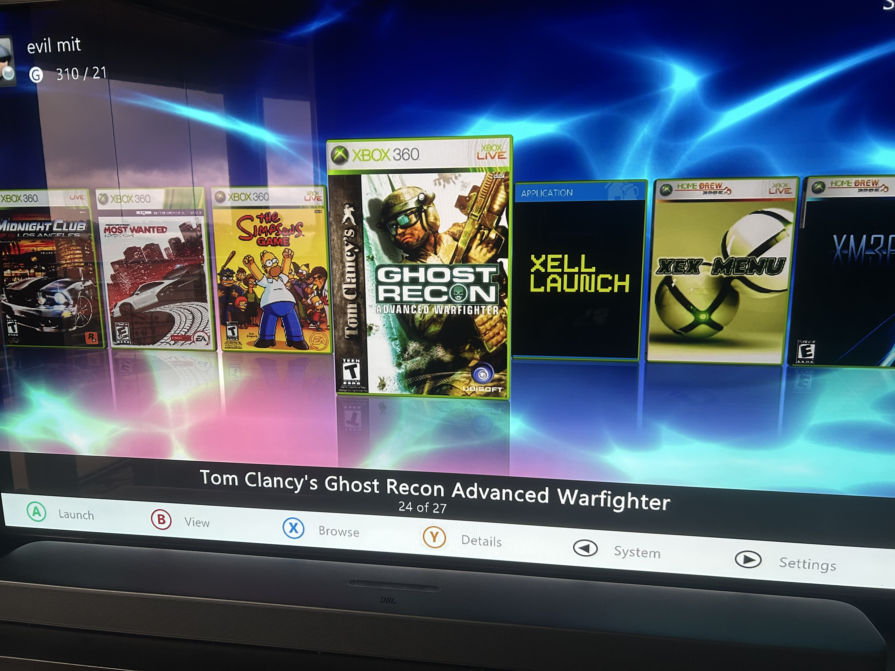
Aurora Dashboard is a massive improvement over the stock interface. Box art, clean navigation, and everything where you'd expect to find it. DashLaunch handles the system-level stuff, boot directly into Aurora, adjust temperature targets, tweak fan curves. The update manager handles game updates, and lets you roll back to older versions where useful (some racing games remove cars from their roster when licensing deals expire, you can get them back).
Wrapping Up
This was the build that made me take modding seriously. I'd bought the 360 in mid-2024, spent months being scared of the PLL point, nearly shipped it off to someone else, and then decided to invest in a proper setup and do it myself. I'm glad I did.
The precision needed for the Corona V3 pushed me harder than anything I'd done before. Scraping solder mask on a live production board under a microscope, checking diode values, verifying every point twice. This build taught me habits I carry into every project now.
Between the clean boot times, fresh thermal paste, and the full Aurora/DashLaunch setup, this console feels genuinely reborn. Worth every minute of the process.
Shoutouts
- MrMario2011 on YouTube : The most comprehensive RGH tutorial channel out there
- ConsoleMods Wiki : excellent documentation and high-res solder point photos
- Xbox360Hub community forum : filled in the gaps around custom dashboard setup